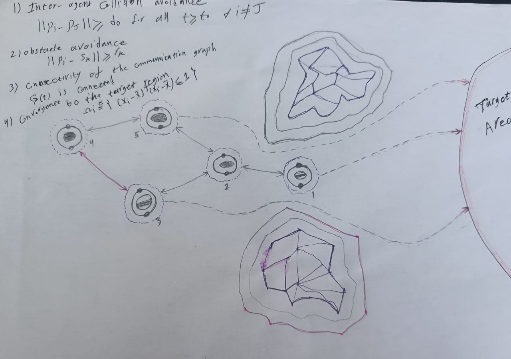
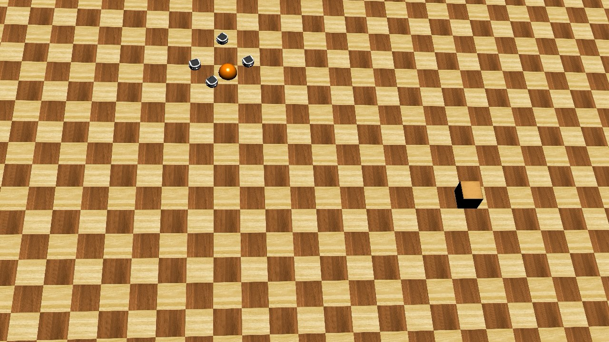

ROS and Webots experiments on security, safety, distributed control, and coordinated mobile-robot behavior.
Khepera III ROS 2 / Linux Webots Multi-robot systems Security & safety Formation control
INDUSTRIAL ROS VALIDATION
Control Barrier Function safety verification in ROS
A ROS 2 and Linux simulation verifies safe goal-reaching for mobile robots operating in a workspace with multiple obstacles.
ROS 2 JazzyLinuxRVizCBF
Obstacle-aware goal reaching with continuous safety enforcement
This verification focuses on the main operational requirements of the mission: the robots must reach the assigned target area, maintain safe clearance from the obstacles, and preserve safe separation from each other throughout the motion.
The Control Barrier Function continuously evaluates the safety constraints and adjusts the control command whenever the planned motion approaches an unsafe region. The result is a collision-free trajectory without removing the goal-reaching objective.
Linux runtime
ROS 2 nodes
RViz visualization
Real-time CBF logic
ROS 2 / Linux safety demonstrationCBF-based navigation of two agents toward a target area while avoiding multiple obstacles in RViz
FEATURED RESEARCH PROJECT
Security and Safety for multi-agent navigation
This picture shows a mission for multiple agents, such as nonholonomic robots, that are moving toward a target area.
PROJECT 01 · RESEARCH IN PROGRESS
ROSMulti-Agent SystemsCybersecurity
Particle-filter monitoring with CBF conditions
During this mission, the agents should maintain a minimum distance from each other to avoid inter-agent collisions, avoid collisions with static obstacles, and finally reach the target area.
Control Barrier FunctionsParticle FiltersAttack DetectionSafe Navigation

Initial mission concept
View project details, video, and results
This picture shows a mission for multiple agents, such as nonholonomic robots, that are moving toward a target area. During this mission, they should maintain a minimum distance from each other to avoid inter-agent collisions, avoid collisions with static obstacles, and finally reach the target area.
We use a CBF approach to achieve this goal. However, there are some important issues, such as cyberattacks. For example, an attacker may compromise the controller of one of the agents and, by knowing the entire process, send incorrect and false information to its neighbors. As a result, the other agents may fail to reach the target area or may collide with each other or with the obstacles.
Here, we generally address this important issue to prevent the attacker from being successful. We use a particle filter to monitor the neighbors of each agent. Then, if we detect that some information is incorrect based on the physical behavior of the neighboring agents, we modify the safety and convergence conditions.
Simulation under attack
This video shows two agents moving toward their goals while avoiding the obstacles. After the attack starts, Agent 2 sends false information to Agent 1. The particle filter monitors this information, and the CBF conditions are changed to keep the agents safe during the motion.
CBF condition verification
This figure verifies the CBF conditions for obstacle avoidance and inter-agent collision avoidance. The values stay above the CBF boundary for both agents, and the total number of violations is zero. It shows that the safety conditions are satisfied even after the attack starts.
Obstacle and inter-agent CBF satisfaction with zero violations. Select the figure to view it at full size.
FEATURED EXPERIMENT
Formation control of mobile robots
A distributed coordination experiment with communication delay, constrained optimization, and Khepera III mobile robots.
PROJECT 02ROSWebotsMATLAB
Distributed formation control under communication delay
The simulation coordinates networked Khepera III robots using distributed dual-decomposition optimization. MATLAB's constrained optimization workflow supports the coordination strategy while ROS and Webots provide the robotic simulation environment.
Distributed optimization
Communication delays
Formation tracking
Constrained control
Simulation resultsFormation control using Khepera III mobile robots
ADDITIONAL SIMULATION
Collision-aware formation tracking
A second experiment combines predictive control and distributed optimization for safe coordination.

PROJECT 03
Formation control with collision avoidance
Four networked mobile robots track a coordinated formation while maintaining collision-free motion. The experiment combines distributed optimization with model predictive control and uses Khepera III robots for validation.
Reproducibility: Simulation packages are publicly available for academic use. Please cite the related publication when adapting these materials for research.